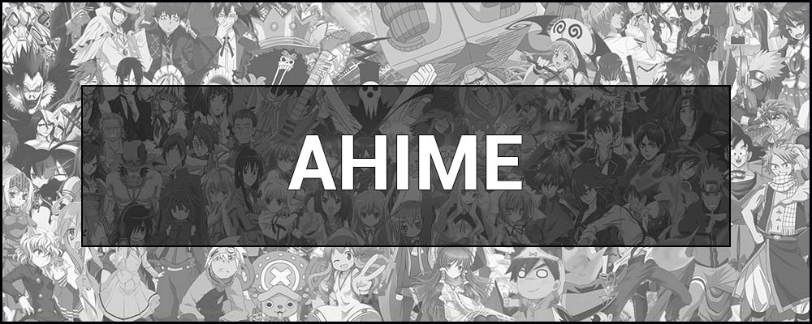
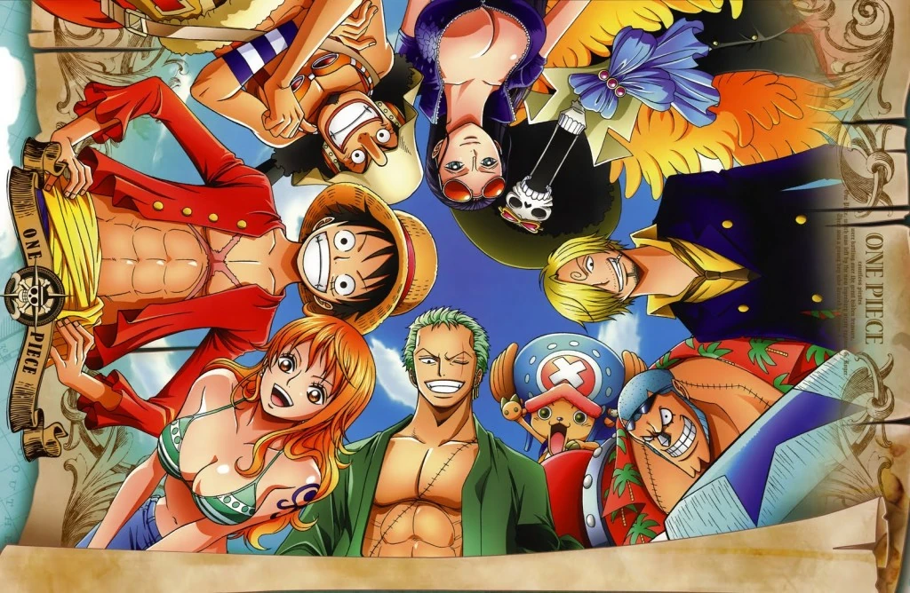
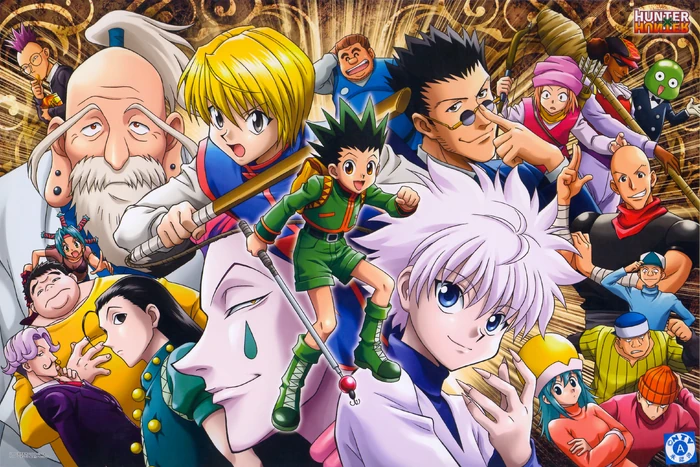

Про статтю
В цій статті буде розповідатись, що таке аніме і будуть декілька прикладів.
-
Зміст
Про аніме

Простими словами Аніме – це особливий стиль мультфільму, створений чи натхненний японською
анімацією.
Це
мальована чи комп’ютерна форма мистецтва, фантастичний світ, у якому є персонажі з яскравими
зачісками,
великими очима у поєднанні з особливим почуттям моди.
Усі аніме-шоу – це мультфільми, але не всі
мультфільми є аніме. Художній стиль, пов’язаний з аніме, дуже унікальний і впізнаваний.
Ван Пис
Головний герой цієї історії - хлопець у солом'яному капелюсі на ім'я Монкі Д. Луффі. Все про що мріє наш герой – це пригоди та подорожі. Будучи маленькою дитиною, вона з'їдає диявольський фрукт і стає гумовою людиною. Тепер у нього є незвичайна здатність – він може розтягувати своє тіло та кінцівки до будь-яких розмірів. Зараз перед Луффі стоїть мета – стати головним серед піратів. Але для цього, судячи з легенд, необхідно дістатися стародавнього скарбу Ван Піс. Колись сам Гол Д. Роджер сховав його десь на Гранд Лайн, течії, що об'єднує безліч островів у всьому світі. Наш веселун вирішує вирушити на їх пошуки.
Однак наш персонаж далеко не єдиний, хто полює за золотом Роджера. Здавалося б, у нашого тямущого хлопця є все, щоб стати королем - надзвичайна сила і гострий розум. Бракує лише одного - вірної та відданої команди, які підуть за своїм капітаном назустріч будь-якій небезпеці. Ось тільки Луффі варто поквапитися, адже за Ван Піс іде ціла ватага злісних піратів, яка не зупиниться ні перед чим, щоб дістатися заповітного скарбу. Монки доведеться докласти чималих зусиль, щоб випередити всіх своїх суперників.
Хантер х Хантер
Події розгортаються у Всесвіті, де є якась організація «Мисливці», яка користується безліччю всіляких привілеїв. Вони можуть абсолютно безкоштовно користуватись будь-якими видами транспорту. До того ж, ще й елітним класом. Також члени організації мисливців мають доступ до певної суми коштів абсолютно в кожному банку. Мисливці можуть надати запит на отримання будь-якої інформації, яка не доступна простим обивателям. Враховуючи всі переваги цієї організації, її ряди хочуть поповнити багато людей.
Виходячи з цієї причини, щорічно проводитиметься іспит для охочих стати мисливцем. Але лише найдостойніші можуть пройти всі випробування, щоб заслужити це почесне місце. Гон Фрікс один із претендентів на вступ до організації. Але головною його метою є пошук батька. Хлопець сподівається, що можливості, які він отримає, допоможуть йому здійснити це. Попереду на нього чекають безліч випробувань та нових знайомств. Він зустріне людей, які стануть його друзями. Кожен із них має свої причини стати одним із учасників могутньої організації.